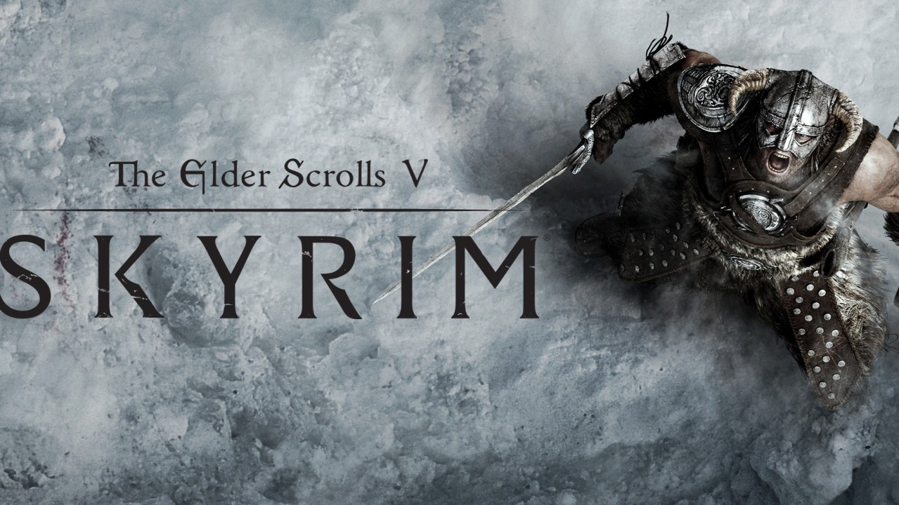

Why I Go Back And Play This (Now) Fourteen-Year-Old Game

Introduction
It’s 2025, and The Elder Scrolls V: Skyrim is turning fourteen. Fourteen years of new technology and bigger games, yet I still want to return to Skyrim. I know I’m not the first to write about why this game is great. Countless pieces have dissected its systems, nostalgia, and modding community. But this is my take. I think Skyrim’s endurance says as much about culture’s shifting relationship with games as it does about the game itself.
Modern AAA and AAAA blockbusters chase photorealism, cinematic storytelling, and massive worlds, yet none feel quite like Skyrim. And it’s not just nostalgia. Skyrim perfected design principles that the industry often overlooks today. In an era of layoffs, sequels, and games built for investors, it still celebrates freedom, curiosity, and the joy of discovery without constant hand-holding.
An Aha Moment
Somewhere between twenty and thirty hours into my first playthrough in Skyrim, I had an awakening. I had been completing quests, leveling up. I felt like I understood the game. Then a friend casually mentioned, “Someone actually beat the game with a level-one character.” My jaw dropped.
It hit me that Skyrim is like a brilliant puzzle. Most players take hours to figure it out, but it can be solved in a single inspired move. As one interactive-fiction designer noted in an interview included in the documentary film, Get Lamp, by Jason Scott, the best puzzles are those “where you spend hours looking, but the answer is only one step away.” Skyrim’s systems are rich, layered, and complex. They reward insight and experimentation. They let you feel clever even when the world is not bending to your will.
Exploration Versus Instant Gratification
These days, big-budget games often feel like content factories, with too many waypoints, hundreds of useless side-quests, and skill trees designed to guide you down preordained and optimized paths. Let’s call it the “instant mastery” model of game design. Skyrim, in contrast, says, “Go. Figure it out. And maybe die a few times along the way.”
Everything in the game rewards curiosity. Players are encouraged to venture into hidden caves and ruined towers, to open boxes and crates, and to converse with wandering NPCs. Environmental storytelling is key as well. Picture a skeleton clutching a note, a series of stones hinting at tragedy, or dusty tomes telling of local lore. Skills improve naturally through use rather than menu-point allocation. Likewise, AI behavior such as wandering bandits and unexpected traps keeps encounters unpredictable and engaging. Skyrim trusts players to discover, to improvise, and to fail spectacularly.
Technical Artistry That Still Stuns
Skyrim’s graphics may not make Gen Alpha players swoon, but its technical artistry is timeless. Unclimbable peaks, steaming marshes, and cavernous dungeons all convey distinct moods. The sound design is incredible, too, including wind rustling pine forests, distant wolves, and crackling torches. All of this, combined with Jeremy Soule’s symphonic score, makes the world feel alive rather than staged. The game’s physics also tells a story. Rolling cabbages and flying cheese wheels reinforce that the world exists independently of the player. Weather affects movement and visibility, subtly changing how you play. These small details are rare in games that chase polish over immersion.
The Economics of Time
Skyrim’s value is absurd. Average playtime on PC is 75 hours, with mods adding hundreds more. Some mods even add entirely new gameplay to the engine. That original $60 ticket price amounts to at least $0.80 per hour of entertainment. Some hardcore modders have pushed it down to $0.09 per hour. Try finding that kind of return in one of today’s $70 AAA releases that only lasts around fifteen hours. Emergent, systems-driven design simply lasts longer and feels more rewarding.
Cultural Impact and the Modding Renaissance
The modding community is both a cultural and mechanical marvel. From quality of life changes to new quests to total conversions, fans have rewritten the game many times. It is the type of participatory media we have all been wishing for since the early 2000s. Players desire autonomy, creativity, control, and a sense of rebellion against corporate-mandated experiences. Major studios that treat games like short-lived services could learn a thing or two from Skyrim.
The result is something bigger than a single game. Skyrim became a living ecosystem. It became a place where players learn to create, collaborate, and iterate. It’s not just a game world. It’s a culture of persistence that mirrors how creative communities continue to thrive even as the industry around them consolidates.
A World That Does Not Care About You
Skyrim doesn’t cater to your ego. The world existed before you arrived and will exist after you leave. Players are participants, not stars. That indifference creates authentic discovery, whether you’re stumbling into Blackreach, piecing together the Red Eagle’s story from artifacts, or gazing at the northern lights from Winterhold. These moments emerge nonlinearly from personal curiosity, not designer instruction.
In a world obsessed with instant gratification, monetized blockbusters, and perfectly scripted experiences, Skyrim reminds us that the best journeys aren’t measured by flashy destinations but by the freedom to explore and make the world your own. Fourteen years later, it still feels like the future of play.
Since my early revelation that the game could be beaten at level one, I have tried to beat every game I’ve played the same way. It never works (at least, not for me). But each attempt reminds me of what Skyrim taught me. Patience, experimentation, and discovery can be more rewarding than power or speed. It’s a lesson worth carrying into every new world I enter. And every game that I make.
Page formatted by Written & Formatted. © Tim Samoff.